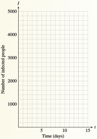

Chapter 2 Modeling with Functions
World3 is a computer model developed by a team of researchers at MIT. The model tracks population growth, use of resources, land development, industrial investment, pollution, and many other variables that describe human impact on the planet.
The figure below is taken from Limits to Growth: The 30-Year Update. The graphs represent four possible answers to World3's core question: How may the global population and economy interact with and adapt to Earth's limited carrying capacity (the maximum it can sustain) over the coming decades?

In this chapter, we examine the properties and features of some basic nonlinear functions and how they may be used as mathematical models.
Investigation 2.1. Epidemics.
A contagious disease whose spread is unchecked can devastate a confined population. For example, in the early sixteenth century Spanish troops introduced smallpox into the Aztec population in Central America, and the resulting epidemic contributed significantly to the fall of Montezuma’s empire.
Suppose that an outbreak of cholera follows severe flooding in an isolated town of 5000 people. Initially (on Day 0), 40 people are infected. Every day after that, 25% of those still healthy fall ill.
At the beginning of the first day (Day 1), how many people are still healthy? How many will fall ill during the first day? What is the total number of people infected after the first day?
-
Check your results against the first two rows of the table. Subtract the total number of infected residents from 5000 to find the number of healthy residents at the beginning of the second day. Then fill in the rest of the table for 10 days. (Round off decimal results to the nearest whole number.)
Day Number Healthy New Patients Total Infected 0 5000 40 40 1 4960 1240 1280 2 3 4 5 6 7 8 9 10  Use the last column of the table to plot the total number of infected residents, \(I\text{,}\) against time, \(t\text{.}\) Connect your data points with a smooth curve.
Do the values of \(I\) approach some largest value? Draw a dotted horizontal line at that value of \(I\text{.}\) Will the values of \(I\) ever exceed that value?
What is the first day on which at least 95% of the population is infected?
Look back at the table. What is happening to the number of new patients each day as time goes on? How is this phenomenon reflected in the graph? How would your graph look if the number of new patients every day were a constant?
Summarize your work: In your own words, describe how the number of residents infected with cholera changes with time. Include a description of your graph.
Investigation 2.2. Perimeter and Area.
Do all rectangles with the same perimeter, say 36 inches, have the same area? Two different rectangles with perimeter 36 inches are shown at right. The first rectangle has base 10 inches and height 8 inches, and its area is 80 square inches. The second rectangle has base 12 inches and height 6 inches. Its area is 72 square inches.
Part I
The table shows the bases of various rectangles, in inches. Each rectangle has a perimeter of \(36\) inches. Fill in the height and the area of each rectangle. (To find the height of the rectangle, reason as follows: The base plus the height makes up half of the rectangle's perimeter.)
What happens to the area of the rectangle when we change its base but still keep the perimeter at \(36\) inches? Plot the points with coordinates (Base, Area). (For this graph, we will not use the heights of the rectangles.) The first two points, \((10, 80)\) and \((12, 72)\text{,}\) are shown. Connect your data points with a smooth curve.
What are the coordinates of the highest point on your graph?
| Base | Height | Area |
| 10 | 8 | 80 |
| 12 | 6 | 72 |
| 4 | ||
| 14 | ||
| 5 | ||
| 17 | ||
| 9 | ||
| 2 | ||
| 11 | ||
| 4 | ||
| 16 | ||
| 15 | ||
| 1 | ||
| 6 | ||
| 8 | ||
| 4 | ||
| 13 | ||
| 7 |
Part II
Each point on your graph represents a particular rectangle with perimeter \(36\) inches. The first coordinate of the point gives the base of the rectangle, and the second coordinate gives the area of the rectangle. What is the largest area you found among rectangles with perimeter \(36\) inches? What is the base for that rectangle? What is its height?
Give the dimensions of the rectangle that corresponds to the point \((13, 65)\text{.}\)
Find two points on your graph with vertical coordinate \(80\text{.}\)
If the rectangle has area \(80\) square inches, what is its base? Why are there two different answers? Describe the rectangle corresponding to each answer.
Now we will write an algebraic expression for the area of the rectangle in terms of its base. Let \(x\) represent the base of the rectangle. First, express the height of the rectangle in terms of \(x\text{.}\) (Hint: If the perimeter of the rectangle is \(36\) inches, what is the sum of the base and the height?) Now write an expression for the area of the rectangle in terms of \(x\text{.}\)
Use your formula from part (8) to compute the area of the rectangle when the base is \(5\) inches. Does your answer agree with the values in your table and the point on your graph?
Use your formula to compute the area of the rectangle when \(x = 0\) and when \(x = 18\text{.}\) Describe the rectangles that correspond to these data points.
Continue your graph to include the points corresponding to \(x = 0\) and \(x = 18\text{.}\)